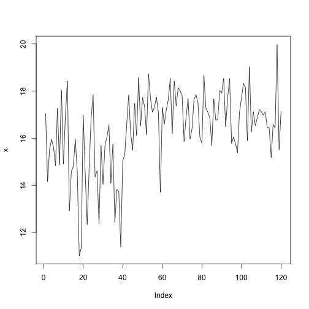
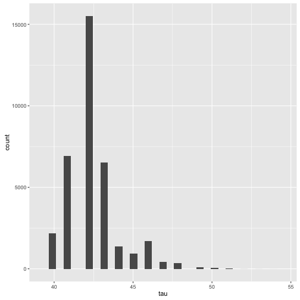
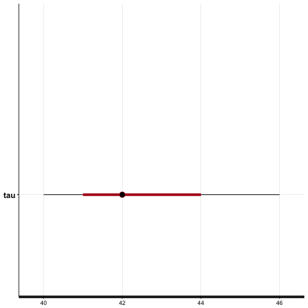

set.seed(42)
Update 2017-03-19: added a reference in the Conclusion about improving runtime performance by tansforming parameters in linear time complexity (see https://github.com/gmodena/bayesian-changepoint/issues/1).
In this document, I'll review a Bayesian approach to detect a single changepoint in a timeseries. I'll implement a model using stan and show how to interpret its output in R using the rstan package. The code for this article can be found at https://github.com/gmodena/bayesian-changepoint.
Let \(D = {d_1, ..., d_n}\) be a time series with \(n\) normally distributed data points. To determine whether a change of parameters \(\mu\) and \(\sigma\) at point \(\tau\) is significant, one possible approach would be to perform a likelihood test. In this setting we run a hypothesis test where the null hypothesis \(H_0\) is there is no changepoint in \(D\), and the alternate hypothesis \(H_1\) is there is at most one changepoint at \(\tau \in D\)1.
More formally \(H_0\) says that \(\forall n\) we have \(d_n \sim \mathcal{N}(\mu, \sigma)\)
Where \(H_1\) says that \(\forall n\)
Under \(H_0\), the log-likelihood of \(D\) is \(log P(D|\mu, \sigma)\). Under \(H_1\) the log-likelihood of \(D\) is \(ll_\tau = log P(D_{1..{\tau-1}} | \mu_1, \sigma_1) + log P(D_{\tau..n} | \mu_2, \sigma_2)\).
We then perform a maximum likelihood estimation to find the value \(\tau\) that maximizes \(ll_{\tau}\), which we use to construct a test statistic \(\lambda = 2 [ max_{\tau} ll_{\tau} - log P(D|\mu, \sigma)]\).
A changepoint has happened iff \(\lambda > c\), for a given \(c\). What is a good value of \(c\)?. As it turns out, the appropriate value for this parameter c is still an open research question with several authors devising p values and other information criteria under different types of changes changepoint: An R Package for Changepoint Analysis.
In the Bayesian setting, we assume that the data \(D\) is generated by some probability distribution parametrized by \(\Theta\). Our goal is to model \(P(\Theta|D)\).
From Bayes rule we know that \(P(\Theta|D) = \frac{P(D|\Theta)P(\Theta)}{P(D)}\). \(P(\Theta|D)\) is called the posterior distribution, \(P(D|\Theta)\) is the likelihood and \(P(\Theta)\) is the the prior. The core of Bayesin statistics can be summarized as calculating \(posterior \propto likelihood \cdot prior\).
A Bayesian data analysis involves the following steps:
A Bayesian model to detect a single changepoint \(\tau\), modeled as a uniformly distributed discrete latent parameter, will look like this:
In many practical applications, a closed form solution for the posterior is hard to derive (eg. the integral is hard, or impossible to calculate), and approximation methods such as Markov Chain Monte Carlo (MCMC) are required.
In the reminder of this document we'll code this model as a stan program, and fit the model with MCMC to calculate the posterior probability \(P(\tau, \mu_1, \sigma_1, \mu_2, \sigma_2 |D)\).
stan is a C++ library that comes with a domain specific modelling language very similar to statistical notation. Stan can help us to perform the Bayesian analysis steps, including MCMC inference (and more advanced techniques). The model that I will illustrate in the remainder of this document, is an adaptation of the Coal Mine Distater example from Stan's manual Section 12. The full code of this model can be found at https://gist.github.com/gmodena/0f316232aa2e9f7b6fc76b49f14bfb31.
A stan program is structured in blocks of code. Each block defines: 1. the data 2. the parameters of our model 3. the model 4. some transformations of the model output
In the data block we describe what the dataset looks like. We will be modelling a time series D, stored as an array of N, real valued, elements.
We require D to have at least one element (int<lower=1> N).
data {
int<lower=1> N;
real D[N];
}
The parameter block describes the sampling space.
In our example, we want to module two Gaussian, each with a mu and sigma. We constrain sigma1 and sigma2 to be positive
({markdown}<lower=0>), so that we can stick an half-normal prior on them later on.
parameters {
real mu1;
real mu2;
real<lower=0> sigma1;
real<lower=0> sigma2;
}
Stan does not allow for sampling from discrete distributions, so we will have to reparametrize our model and marginalise out \(\tau\). Let's proceed one step at a time.
We know that \(P(D|\tau,\mu_1,\sigma_1,\mu_2,\sigma_2)=\frac{P(D,\tau,\mu_1,\sigma_1,\mu_2,\sigma_2)}{P(\tau,\mu_1,\sigma_1,\mu_2,\sigma_2)}\). It follows that the joint probability distribution factors as \(P(D,\tau,\mu_1,\sigma_1,\mu_2,\sigma_2)=P(D|\tau,\mu_1,\sigma_1,\mu_2,\sigma_2)P(\tau,\mu_1,\sigma_1,\mu_2,\sigma_2)\).
To marginalize out \(\tau\) we'll consider a factorization into likelihood and prior as \(P(D,\mu_1,\sigma_1,\mu_2,\sigma_2) = P(D|\mu_1,\sigma_1,\mu_2,\sigma_2)P(\mu_1,\sigma_1,\mu_2,\sigma_2)\).
Then we calculate the likelihood \(P(D|\mu_1, \sigma_1, \mu_2, \sigma_2) = \sum_{n=1}^N P(\tau, D | \mu_1, \sigma_1, \mu_2, \sigma_2) = \sum_{\tau=1}^N P(\tau) P(D|\tau, \mu_1, \sigma_1, \mu_2, \sigma_2)=\sum_{\tau=1}^N P(\tau) \prod_{n=1}^N P(d_n|\tau, \mu_1, \sigma_1, \mu_2, \sigma_2)\). Where \(P(D|\tau, \mu_1, \sigma_1, \mu_2, \sigma_2)\) is a product of Gaussians.
The transformed parameters block is used to process the parameters before calculating the posterior. In the block that follows we marginalise out tau and calculate log_p(D | mu1, sd1, mu2, sd2). Since stan works in logarithmic scale, we'll have to take the sum of the log PDFs (normal_lpdf).
// TODO: we can calculate log_p(D | mu1, sd1, mu2, sd2) in
// linear time with dynamic programming. See the Conclusion section.
transformed parameters {
vector[N] log_p;
real mu;
real sigma;
log_p = rep_vector(-log(N), N);
for (tau in 1:N)
for (n in 1:N) {
mu = n < tau ? mu1 : mu2;
sigma = i < tau ? sigma1 : sigma2;
log_p[tau] = log_p[tau] + normal_lpdf(D[n] | mu, sigma);
}
}
The functions normal_lpdf (and normal_lpdf used in the model block) allows us to write a model in log scale, as required by Stan.
In the model block we define the priors on \(\mu_1\), \(\mu_2\), \(\sigma_1\), \(\sigma_2\), and the log-likelihood \(\sum_{n} = log_p(d_n | \mu_1, \sigma_1, \mu_2, \sigma_2)\). A reasonably good default choice is to use an half-normal prior on the scale parameters \(\sigma_1, \sigma_2\)(a negative scale would be ill defined!). Here I'm using large values for the scale parameter \(\sigma\) to denote uncertantinty in the prior beliefs of the distribution. See Prior Choice Recommendations for an overview and best practices. If we know more about the data, we could use more certain values, that is define more appropriate priors.
model {
mu1 ~ normal(0, 100);
mu2 ~ normal(0, 100);
// scale parameters need to be > 0;
// we constrained sigma1, sigma2 to be positive
// so that stan interprets the following as half-normal priors
sigma1 ~ normal(0, 100);
sigma2 ~ normal(0, 100);
target += log_sum_exp(log_p);
}
What about the posterior? This is where some of Stan's magic kicks in. At each iteration of MCMC sampling after convergence, \(\mu_1, \sigma_1, \mu_2, \sigma_2\) are drawn from \(P( \mu_1, \sigma_1, \mu_2, \sigma_2 | D)\), and \(P(\tau| \mu_1, \sigma_1, \mu_2, \sigma_2, D)\) is calculated based on the local unnormalized value of log_p. As a final step \(P(\tau | \mu_1, \sigma_1, \mu_2, \sigma_2, D)\) is normalized by averaging over all draws to obtain \(P(\tau|D)\). More details on this step can be found in Stan's manual.
The generated quantities block allows for postprocessing. We can use it to draw a discrete sampling of tau at each iteration using the categorical_rng probability distribution. At each iteration we draw a value of tau, and later on, we'll look at the histogram of draws to determine the most likely changepoint as the most frequent tau.
generated quantities {
int<lower=1,upper=N> tau;
// K simplex are a data type in Stan
simplex[N] sp;
sp = softmax(log_p);
tau = categorical_rng(sp);
}
The softmax transform maps log_p to a K-simplex, which is the parameter type expected by categorical_rng. The label will be the index of log_p.
Let's generate some artificial data to test if the models works as expected.
x1 <- rnorm(41, mean=15, sd=1.5)
x2 <- rnorm(79, mean=17, sd=1.1)
x <- c(x1, x2)
plot(x, type='l')

If all goes as expected, a changepoint should be identified at \(\tau = 42\).
I'll be using the excellent rstan package to fit the model and analyse its output.
library(rstan)
## Loading required package: StanHeaders
## rstan (Version 2.11.1, packaged: 2016-07-28 18:19:31 UTC, GitRev: 85f7a56811da)
## For execution on a local, multicore CPU with excess RAM we recommend calling
## rstan_options(auto_write = TRUE)
## options(mc.cores = parallel::detectCores())
rstan::stan_version()
## [1] "2.11.0"
rstan_options(auto_write = TRUE) # cache a compiled Stan program
The stan function wraps the following three steps:
The function returns an S4 stanfit object. We can use methods such as print and plot (and pairs) to check the fitted results.
fit <- stan(
file = "changepoint.stan",
data = list(D = x, N=length(x)),
chains = 4,
warmup = 1000,
iter = 10000,
cores = 4,
refresh = 500
)
The parameters are self explanatory. Note that the variables naming in the data parameter should match the data block in the stan code.
print gives an overview of the parameters and the log posterior log_p.
print(fit)
## Inference for Stan model: changepoint.
## 4 chains, each with iter=10000; warmup=1000; thin=1;
## post-warmup draws per chain=9000, total post-warmup draws=36000.
##
## mean se_mean sd 2.5% 25% 50% 75% 97.5%
## mu1 14.96 0.00 0.28 14.41 14.77 14.96 15.15 15.52
## mu2 17.06 0.00 0.11 16.83 16.99 17.06 17.14 17.29
## sigma1 1.88 0.00 0.21 1.52 1.73 1.86 2.00 2.34
## sigma2 1.06 0.00 0.08 0.91 1.00 1.05 1.11 1.24
## log_p[1] -302.90 0.11 20.78 -348.66 -315.55 -301.12 -288.10 -267.64
## log_p[2] -304.12 0.11 20.85 -349.99 -316.83 -302.34 -289.28 -268.64
## log_p[3] -300.95 0.11 20.25 -345.59 -313.24 -299.23 -286.53 -266.55
## log_p[4] -300.52 0.11 20.10 -344.85 -312.71 -298.82 -286.22 -266.43
## log_p[5] -300.68 0.11 20.05 -344.91 -312.83 -298.97 -286.41 -266.66
## log_p[6] -300.35 0.11 19.92 -344.32 -312.43 -298.66 -286.15 -266.54
## log_p[7] -298.69 0.11 19.58 -341.90 -310.53 -297.01 -284.72 -265.47
## log_p[8] -300.03 0.11 19.66 -343.38 -311.95 -298.35 -286.01 -266.64
## log_p[9] -298.40 0.10 19.32 -340.99 -310.13 -296.72 -284.62 -265.58
## log_p[10] -299.93 0.10 19.38 -342.60 -311.69 -298.27 -286.12 -266.97
## log_p[11] -298.40 0.10 19.06 -340.37 -309.95 -296.73 -284.81 -265.99
## log_p[12] -299.55 0.10 19.13 -341.74 -311.17 -297.88 -285.89 -266.98
## log_p[13] -301.05 0.10 19.15 -343.23 -312.67 -299.36 -287.40 -268.39
## log_p[14] -294.44 0.10 17.94 -334.00 -305.31 -292.83 -281.64 -263.96
## log_p[15] -292.25 0.09 17.51 -330.95 -302.83 -290.68 -279.74 -262.52
## log_p[16] -290.50 0.09 17.16 -328.46 -300.87 -288.96 -278.24 -261.40
## log_p[17] -290.66 0.09 17.11 -328.58 -301.00 -289.12 -278.42 -261.60
## log_p[18] -288.45 0.09 16.68 -325.40 -298.53 -286.94 -276.52 -260.15
## log_p[19] -274.73 0.08 14.14 -306.27 -283.23 -273.36 -264.57 -251.00
## log_p[20] -262.38 0.06 11.89 -289.14 -269.46 -261.17 -253.84 -242.74
## log_p[21] -263.55 0.06 11.96 -290.42 -270.68 -262.34 -254.96 -243.75
## log_p[22] -261.26 0.06 11.51 -287.18 -268.11 -260.06 -252.96 -242.25
## log_p[23] -252.69 0.05 9.96 -275.33 -258.57 -251.61 -245.50 -236.48
## log_p[24] -250.83 0.05 9.58 -272.64 -256.47 -249.76 -243.90 -235.28
## log_p[25] -251.89 0.05 9.64 -273.79 -257.56 -250.81 -244.92 -236.22
## log_p[26] -253.41 0.05 9.72 -275.52 -259.15 -252.35 -246.41 -237.62
## log_p[27] -250.71 0.05 9.20 -271.70 -256.12 -249.68 -244.07 -235.82
## log_p[28] -248.58 0.05 8.78 -268.65 -253.71 -247.57 -242.23 -234.44
## log_p[29] -240.11 0.04 7.26 -256.88 -244.29 -239.21 -234.84 -228.70
## log_p[30] -239.90 0.04 7.15 -256.43 -244.01 -239.00 -234.71 -228.68
## log_p[31] -236.46 0.04 6.51 -251.57 -240.17 -235.60 -231.70 -226.40
## log_p[32] -236.25 0.03 6.40 -251.11 -239.89 -235.39 -231.57 -226.35
## log_p[33] -236.54 0.03 6.37 -251.35 -240.19 -235.70 -231.89 -226.67
## log_p[34] -237.37 0.03 6.41 -252.30 -241.06 -236.53 -232.68 -227.40
## log_p[35] -234.04 0.03 5.80 -247.61 -237.33 -233.24 -229.79 -225.16
## log_p[36] -233.93 0.03 5.72 -247.32 -237.18 -233.15 -229.74 -225.15
## log_p[37] -225.70 0.02 4.26 -235.90 -228.02 -225.02 -222.56 -219.52
## log_p[38] -221.70 0.02 3.57 -230.38 -223.59 -221.08 -219.07 -216.72
## log_p[39] -217.44 0.02 2.86 -224.57 -218.90 -216.89 -215.34 -213.64
## log_p[40] -205.26 0.01 1.41 -208.88 -205.90 -204.92 -204.24 -203.56
## log_p[41] -204.00 0.01 1.39 -207.56 -204.65 -203.67 -202.99 -202.33
## log_p[42] -203.20 0.01 1.42 -206.81 -203.87 -202.86 -202.16 -201.48
## log_p[43] -204.07 0.01 1.43 -207.71 -204.74 -203.74 -203.04 -202.35
## log_p[44] -205.59 0.01 1.44 -209.28 -206.26 -205.26 -204.55 -203.86
## log_p[45] -206.05 0.01 1.48 -209.85 -206.74 -205.71 -204.97 -204.26
## log_p[46] -205.55 0.01 1.55 -209.52 -206.28 -205.18 -204.43 -203.67
## log_p[47] -206.98 0.01 1.61 -211.09 -207.73 -206.60 -205.81 -205.03
## log_p[48] -207.33 0.01 1.68 -211.60 -208.13 -206.94 -206.11 -205.28
## log_p[49] -208.79 0.01 1.81 -213.37 -209.64 -208.36 -207.47 -206.57
## log_p[50] -209.59 0.01 1.90 -214.36 -210.50 -209.15 -208.21 -207.26
## log_p[51] -211.09 0.01 2.05 -216.19 -212.08 -210.62 -209.59 -208.55
## log_p[52] -212.47 0.01 2.20 -217.94 -213.54 -211.96 -210.86 -209.72
## log_p[53] -212.86 0.01 2.28 -218.49 -213.98 -212.34 -211.18 -209.99
## log_p[54] -214.26 0.02 2.57 -220.67 -215.54 -213.69 -212.38 -210.99
## log_p[55] -215.75 0.02 2.78 -222.67 -217.15 -215.15 -213.72 -212.18
## log_p[56] -217.00 0.02 2.93 -224.29 -218.49 -216.37 -214.85 -213.19
## log_p[57] -218.35 0.02 3.12 -226.06 -219.95 -217.72 -216.06 -214.27
## log_p[58] -219.85 0.02 3.35 -228.10 -221.60 -219.19 -217.38 -215.40
## log_p[59] -221.10 0.02 3.52 -229.72 -222.95 -220.43 -218.50 -216.38
## log_p[60] -216.80 0.02 3.46 -225.33 -218.61 -216.11 -214.26 -212.14
## log_p[61] -218.16 0.02 3.64 -227.12 -220.07 -217.45 -215.49 -213.23
## log_p[62] -219.03 0.02 3.75 -228.23 -221.02 -218.30 -216.28 -213.92
## log_p[63] -220.33 0.02 3.92 -229.90 -222.42 -219.60 -217.44 -214.96
## log_p[64] -221.81 0.02 4.14 -231.93 -224.03 -221.04 -218.76 -216.09
## log_p[65] -223.28 0.02 4.48 -234.22 -225.69 -222.48 -219.98 -217.01
## log_p[66] -223.74 0.03 4.56 -234.85 -226.21 -222.94 -220.40 -217.33
## log_p[67] -225.24 0.03 4.90 -237.17 -227.90 -224.39 -221.65 -218.28
## log_p[68] -226.62 0.03 5.10 -238.98 -229.41 -225.75 -222.89 -219.34
## log_p[69] -228.15 0.03 5.41 -241.17 -231.11 -227.25 -224.21 -220.38
## log_p[70] -229.69 0.03 5.70 -243.38 -232.82 -228.76 -225.53 -221.44
## log_p[71] -231.20 0.03 5.96 -245.45 -234.51 -230.26 -226.85 -222.51
## log_p[72] -231.23 0.03 6.00 -245.55 -234.54 -230.28 -226.85 -222.48
## log_p[73] -232.34 0.03 6.15 -246.97 -235.75 -231.38 -227.84 -223.35
## log_p[74] -233.83 0.03 6.39 -249.02 -237.38 -232.85 -229.17 -224.41
## log_p[75] -233.99 0.04 6.44 -249.32 -237.57 -232.99 -229.28 -224.51
## log_p[76] -234.67 0.04 6.54 -250.22 -238.32 -233.64 -229.90 -225.02
## log_p[77] -236.15 0.04 6.78 -252.24 -239.95 -235.11 -231.20 -226.08
## log_p[78] -237.67 0.04 7.05 -254.35 -241.62 -236.61 -232.53 -227.15
## log_p[79] -239.11 0.04 7.28 -256.29 -243.21 -238.02 -233.81 -228.19
## log_p[80] -239.36 0.04 7.34 -256.68 -243.49 -238.26 -234.02 -228.36
## log_p[81] -239.30 0.04 7.37 -256.67 -243.47 -238.19 -233.94 -228.24
## log_p[82] -240.73 0.04 7.76 -259.06 -245.12 -239.59 -235.09 -229.04
## log_p[83] -242.08 0.04 7.96 -260.80 -246.58 -240.91 -236.29 -230.03
## log_p[84] -243.32 0.04 8.14 -262.41 -247.93 -242.14 -237.41 -230.97
## log_p[85] -244.41 0.05 8.29 -263.80 -249.12 -243.22 -238.40 -231.79
## log_p[86] -244.20 0.05 8.31 -263.62 -248.95 -243.01 -238.17 -231.55
## log_p[87] -245.69 0.05 8.56 -265.70 -250.59 -244.48 -239.49 -232.61
## log_p[88] -246.70 0.05 8.70 -267.06 -251.67 -245.48 -240.40 -233.37
## log_p[89] -247.74 0.05 8.84 -268.37 -252.79 -246.51 -241.33 -234.18
## log_p[90] -249.27 0.05 9.14 -270.61 -254.50 -248.02 -242.65 -235.20
## log_p[91] -250.80 0.05 9.42 -272.77 -256.20 -249.51 -243.98 -236.24
## log_p[92] -252.27 0.05 9.79 -275.06 -257.86 -250.97 -245.16 -237.10
## log_p[93] -253.02 0.05 9.90 -276.05 -258.69 -251.71 -245.86 -237.67
## log_p[94] -254.52 0.06 10.16 -278.07 -260.34 -253.19 -247.17 -238.71
## log_p[95] -255.99 0.06 10.54 -280.41 -262.03 -254.63 -248.36 -239.58
## log_p[96] -255.92 0.06 10.56 -280.39 -261.97 -254.53 -248.26 -239.47
## log_p[97] -256.20 0.06 10.62 -280.85 -262.30 -254.81 -248.53 -239.67
## log_p[98] -256.09 0.06 10.65 -280.81 -262.22 -254.69 -248.41 -239.52
## log_p[99] -255.43 0.06 10.65 -280.13 -261.57 -254.04 -247.73 -238.87
## log_p[100] -256.67 0.06 10.83 -281.74 -262.91 -255.26 -248.85 -239.80
## log_p[101] -258.17 0.06 11.09 -283.84 -264.57 -256.73 -250.16 -240.87
## log_p[102] -259.69 0.06 11.43 -286.13 -266.28 -258.21 -251.46 -241.80
## log_p[103] -261.22 0.06 11.74 -288.36 -267.98 -259.72 -252.75 -242.81
## log_p[104] -261.31 0.06 11.79 -288.59 -268.12 -259.80 -252.81 -242.81
## log_p[105] -262.56 0.07 12.25 -290.85 -269.62 -261.01 -253.70 -243.33
## log_p[106] -263.09 0.07 12.33 -291.54 -270.23 -261.53 -254.20 -243.71
## log_p[107] -264.35 0.07 12.51 -293.19 -271.57 -262.78 -255.31 -244.67
## log_p[108] -265.16 0.07 12.62 -294.27 -272.46 -263.58 -256.06 -245.29
## log_p[109] -266.25 0.07 12.77 -295.74 -273.63 -264.67 -257.07 -246.12
## log_p[110] -267.56 0.07 12.96 -297.40 -275.05 -265.96 -258.24 -247.09
## log_p[111] -268.82 0.07 13.14 -299.03 -276.42 -267.22 -259.36 -248.05
## log_p[112] -269.99 0.07 13.31 -300.47 -277.70 -268.36 -260.41 -248.95
## log_p[113] -271.25 0.07 13.49 -302.09 -279.07 -269.61 -261.55 -249.88
## log_p[114] -271.99 0.07 13.60 -303.07 -279.91 -270.36 -262.21 -250.44
## log_p[115] -272.72 0.07 13.70 -304.00 -280.70 -271.08 -262.86 -250.97
## log_p[116] -271.68 0.07 13.68 -303.00 -279.66 -270.01 -261.82 -249.96
## log_p[117] -272.53 0.07 13.80 -304.09 -280.58 -270.86 -262.59 -250.60
## log_p[118] -273.24 0.08 13.91 -305.03 -281.37 -271.56 -263.23 -251.13
## log_p[119] -273.67 0.08 14.50 -306.94 -282.10 -271.92 -263.22 -250.68
## log_p[120] -273.19 0.08 14.51 -306.48 -281.64 -271.41 -262.73 -250.15
## tau 42.35 0.01 1.58 40.00 41.00 42.00 43.00 46.00
## lp__ -204.26 0.01 1.35 -207.71 -204.90 -203.94 -203.29 -202.63
## n_eff Rhat
## mu1 33365 1
## mu2 33456 1
## sigma1 31036 1
## sigma2 32798 1
## log_p[1] 34223 1
## log_p[2] 34221 1
## log_p[3] 34226 1
## log_p[4] 34224 1
## log_p[5] 34222 1
## log_p[6] 34219 1
## log_p[7] 34219 1
## log_p[8] 34217 1
## log_p[9] 34216 1
## log_p[10] 34217 1
## log_p[11] 34216 1
## log_p[12] 34213 1
## log_p[13] 34218 1
## log_p[14] 34233 1
## log_p[15] 34233 1
## log_p[16] 34231 1
## log_p[17] 34225 1
## log_p[18] 34223 1
## log_p[19] 34275 1
## log_p[20] 34320 1
## log_p[21] 34317 1
## log_p[22] 34313 1
## log_p[23] 34328 1
## log_p[24] 34314 1
## log_p[25] 34310 1
## log_p[26] 34320 1
## log_p[27] 34303 1
## log_p[28] 34278 1
## log_p[29] 34226 1
## log_p[30] 34194 1
## log_p[31] 34101 1
## log_p[32] 34051 1
## log_p[33] 34013 1
## log_p[34] 33996 1
## log_p[35] 33827 1
## log_p[36] 33751 1
## log_p[37] 33044 1
## log_p[38] 32126 1
## log_p[39] 30367 1
## log_p[40] 19283 1
## log_p[41] 18333 1
## log_p[42] 18209 1
## log_p[43] 18258 1
## log_p[44] 18721 1
## log_p[45] 19020 1
## log_p[46] 19344 1
## log_p[47] 20089 1
## log_p[48] 20607 1
## log_p[49] 22288 1
## log_p[50] 22898 1
## log_p[51] 24299 1
## log_p[52] 25417 1
## log_p[53] 25660 1
## log_p[54] 27566 1
## log_p[55] 28612 1
## log_p[56] 29193 1
## log_p[57] 29818 1
## log_p[58] 30746 1
## log_p[59] 31074 1
## log_p[60] 30480 1
## log_p[61] 30862 1
## log_p[62] 30996 1
## log_p[63] 31286 1
## log_p[64] 31663 1
## log_p[65] 32215 1
## log_p[66] 32203 1
## log_p[67] 32619 1
## log_p[68] 32781 1
## log_p[69] 33044 1
## log_p[70] 33248 1
## log_p[71] 33397 1
## log_p[72] 33340 1
## log_p[73] 33381 1
## log_p[74] 33496 1
## log_p[75] 33450 1
## log_p[76] 33439 1
## log_p[77] 33537 1
## log_p[78] 33642 1
## log_p[79] 33709 1
## log_p[80] 33672 1
## log_p[81] 33620 1
## log_p[82] 33775 1
## log_p[83] 33812 1
## log_p[84] 33836 1
## log_p[85] 33845 1
## log_p[86] 33796 1
## log_p[87] 33852 1
## log_p[88] 33853 1
## log_p[89] 33856 1
## log_p[90] 33924 1
## log_p[91] 33978 1
## log_p[92] 34059 1
## log_p[93] 34046 1
## log_p[94] 34080 1
## log_p[95] 34145 1
## log_p[96] 34115 1
## log_p[97] 34091 1
## log_p[98] 34060 1
## log_p[99] 34020 1
## log_p[100] 34027 1
## log_p[101] 34058 1
## log_p[102] 34111 1
## log_p[103] 34151 1
## log_p[104] 34127 1
## log_p[105] 34197 1
## log_p[106] 34182 1
## log_p[107] 34186 1
## log_p[108] 34175 1
## log_p[109] 34173 1
## log_p[110] 34178 1
## log_p[111] 34181 1
## log_p[112] 34180 1
## log_p[113] 34182 1
## log_p[114] 34170 1
## log_p[115] 34158 1
## log_p[116] 34129 1
## log_p[117] 34119 1
## log_p[118] 34107 1
## log_p[119] 34206 1
## log_p[120] 34183 1
## tau 35669 1
## lp__ 18245 1
##
## Samples were drawn using NUTS(diag_e) at Sun Mar 19 15:49:47 2017.
## For each parameter, n_eff is a crude measure of effective sample size,
## and Rhat is the potential scale reduction factor on split chains (at
## convergence, Rhat=1).
Looking at the table, we can see that the log_p has a minimum at index 42. We can see this more explicitly if we look at a histogram of
the discrete values of tau
qplot(extract(fit)$tau, geom='histogram', xlab = "tau")
## `stat_bin()` using `bins = 30`. Pick better value with `binwidth`.

print(fit, pars=c("tau"))
## Inference for Stan model: changepoint.
## 4 chains, each with iter=10000; warmup=1000; thin=1;
## post-warmup draws per chain=9000, total post-warmup draws=36000.
##
## mean se_mean sd 2.5% 25% 50% 75% 97.5% n_eff Rhat
## tau 42.35 0.01 1.58 40 41 42 43 46 35669 1
##
## Samples were drawn using NUTS(diag_e) at Sun Mar 19 15:49:47 2017.
## For each parameter, n_eff is a crude measure of effective sample size,
## and Rhat is the potential scale reduction factor on split chains (at
## convergence, Rhat=1).
We also get the credible inteterval of \(\tau\) using the plot function with
plot(fit, pars=c("tau"))
## ci_level: 0.8 (80% intervals)
## outer_level: 0.95 (95% intervals)
 The plot indicates the expected value of \(\tau = 42\). The red bands denote the 80% credible interval; if we were to repeat the experiment several time, we'd expect \(\tau\) to lie in the interval \(41 \leq \tau \leq 44\) with probability \(P=0.80\). The black bands denote the 95% credible interval.
This result is consistent with the dataset \(D\).
In this document I showed a simple yet powerful bayesian model for detecting a single changepoint in a timeseries. The advantages over the frequentist approach are twofold. On the one hand, the Bayesian model gives a distribution of changepoints and not a single point estimate. This lets us reason about how credible the model output is. On the other hand, we don't need to hard-code threshold values for a test statistic, but rather embed our prior knowledge about the data to "tune" the model.
It's not all roses, though. The flexibility given to us by the Bayesian framework comes at the expenses of some math being needed to work with a discrete parameter. This is largely due to stans implementation choices wrt discrete random variables. For a more concise changepoint model, written with the PyMC framework one can have a look at the work of my colleague Vincent at Switching to Sampling in order to Switch. A drawback of the Bayesian approach is that it is relatively computationally expensive. On my machine (a 2015 retina MacBook pro), it takes about 7 seconds to run the MCMC simulation on four cores2. For comparison, the changepoint package has a sub-second run time. One bottle neck of this model is the quadratic cost for marginalising out tau in the transformed paramteres block. We can make this operation linear by dynamic programming (see also the discussion wrt the coal mine example in the stan manual).
Many thanks to @idontgetoutmuch for suggesting the following implementation:
transformed parameters {
vector[N] log_p;
{
vector[N+1] log_p_e;
vector[N+1] log_p_l;
log_p_e[1] = 0;
log_p_l[1] = 0;
for (i in 1:N) {
log_p_e[i + 1] = log_p_e[i] + normal_lpdf(D[i] | mu1, sigma1);
log_p_l[i + 1] = log_p_l[i] + normal_lpdf(D[i] | mu2, sigma2);
}
log_p = rep_vector(-log(N) + log_p_l[N + 1], N) + head(log_p_e, N) - head(log_p_l, N);
}
}
Which leads to a total runtime of apporximately 3.5 seconds:
Elapsed Time: 0.833563 seconds (Warm-up)
2.64182 seconds (Sampling)
3.47538 seconds (Total)
The excellent changepoint R package implements this likelihood test, as well as its natural extension to the case of multiple change points. ↩
The transformed parameters block has a quadratic time complexity. Stan's manual contains a dynamic programming alternative with linear time complexity. ↩